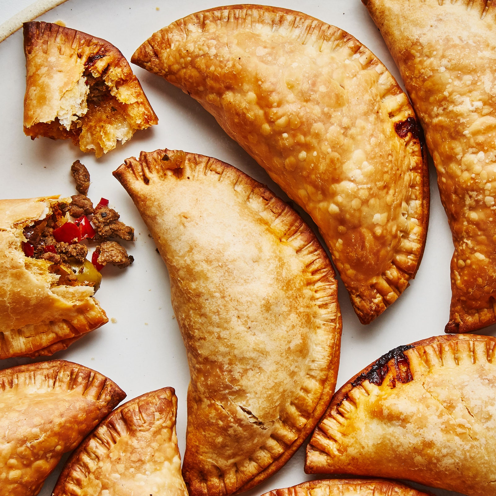

Empanadas

Description
The great thing about empanadas is you can fill them with whatever you like, so take advantage of leftover meats, vegetables and cheese in your fridge that need to be used. Popular fillings include ground beef, ham and cheese, potato, eggs and bacon, chicken, tuna, and vegetable. You could even make dessert empanadas with apple pie filling, sprinkled with cinnamon and sugar on the outside.
Ingredients
Dough for empanadas mendocinas – makes about 20 medium or 30 small empanadas:
- 3 cups flour
- 1 egg yolk
- ½ cup of grasa - lard or butter or mix of both
- <¾ to 1 cup of warm milk
- ½ tsp salt
Beef picadillo filling:
- 1 lb ground beef
- 2 white onions diced, about 3 cups
- 1/2 cup lard or butter
- 2 tbs smoked paprika
- 2 tsp chili powder or any ground hot pepper adjust to taste
- 1 tbs finely chopped fresh oregano
- ½ tbs ground cumin
- 1 bunch green onions finely chopped
- 3 hard boiled eggs sliced
- ¼ cup sliced green olives
- Salt and pepper to taste
- 1 egg white and yolk separated and lightly whisked
Steps
Empanada dough
- Mix the flour and salt in a food processor, pulse until well combined.
- Add the lard or butter, blend well.
- Add the egg yolk and the milk in small amounts, pulse until small dough clumps start to form.
- Make a couple of balls, flatten into disks and chill in the refrigerator for about 30 minutes.
- On a lightly floured surface roll out the dough into a thin sheet and cut out round disc shapes for empanadas (use round molds or a small plate).
- Use the empanada discs immediately or store in the refrigerator or freezer until ready to use.
Beef picadillo filling and empanada assembly:
- Combine the ground beef, paprika, red pepper, cumin, salt and pepper in a large bowl, mix all the ingredients together and chill until ready to use.
- Melt the lard in a large frying pan or sauté pan, add the onions and salt, cook until the onions are soft, about 8 minutes.
- Add the meat mixture to the onions and cook on medium heat until the meat is done, stir frequently.
- Let the meat mixture or picadillo cool down, and then mix in the chopped green onions and chopped oregano.
- To assemble the empanadas add a spoonful of the meat mixture on the center of each empanada disc, add a slice of egg and sliced olive.
- Brush the edges of the empanada discs with the egg whites, you can also use water but the egg white is a good natural “glue” that helps seal the empanada.
- Fold the empanada discs and seal the edges gently with your fingers, twist and fold the edges of the empanadas with your fingers, as a final step use a fork to press down and finish sealing the empanadas.
- Lightly brush the top of the empanadas with the egg yolk; this will give them a nice golden glow when they bake.
- Let the empanadas rest in the fridge for about 30 minutes or until ready to bake.
- Pre-heat the oven to 400 F and bake for about 20-25 minutes, until golden on top.
- Serve warm with chimichurri sauce or other dipping sauces.
Back to index